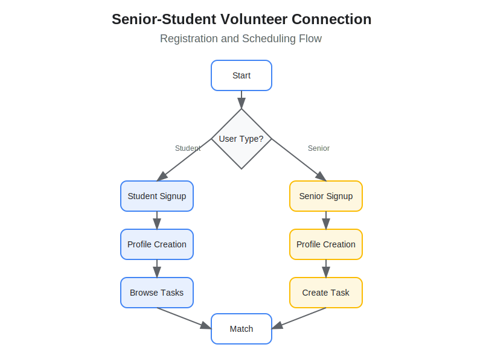
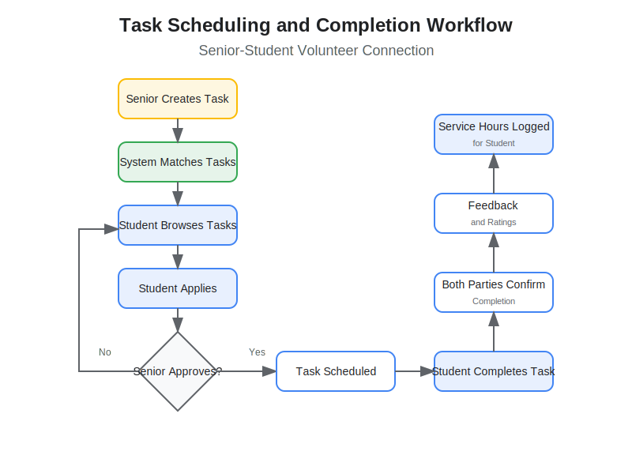
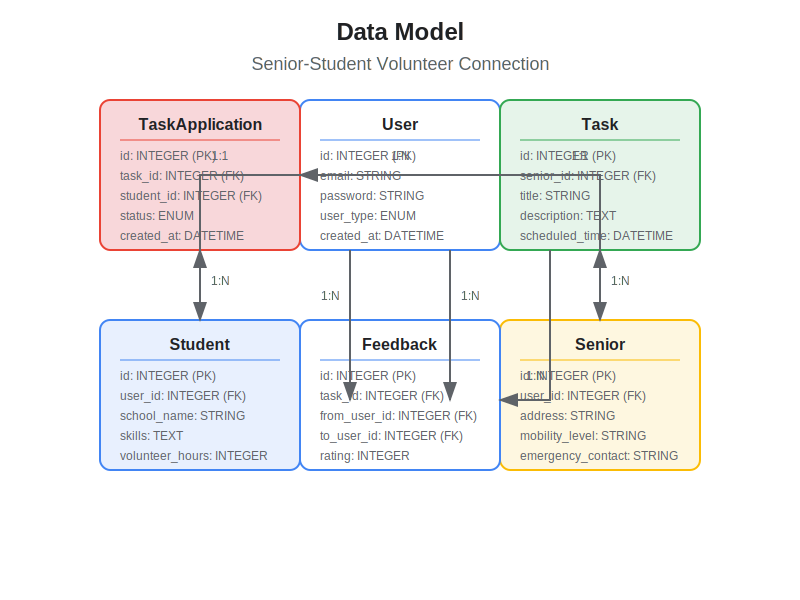

Senior-Student Volunteer Connection
Bridging Generations Through Service
Problem Statement
Our Solution
A web-based platform that:
User Journey Map

Our platform provides a seamless experience from discovery to follow-up for both seniors and students.
Registration and Account Flow
- Users register as either students or seniors
- Both create detailed profiles with relevant information
- Verification ensures safety and reliability
Task Creation and Completion Flow
- Seniors post tasks they need help with
- Students browse and apply for tasks
- Seniors approve student applications
- Tasks are completed and verified
- Both parties provide feedback
Data Model
Our application is built on a robust database schema that supports all user interactions.
Features for Students
Features for Seniors
Technical Architecture
Backend
- FastAPI (Python)
- SQLite database
- SQLAlchemy ORM
- JWT authentication
Frontend
- React with hooks
- Context API for state management
- Mobile-responsive design
- Axios for API communication
Security & Trust
- Comprehensive user verification
- Parent/guardian consent for student volunteers
- Emergency contact information
- In-app messaging for safe communication
- User rating and feedback system
Impact
For Students
Meaningful volunteer opportunities, skill development, community connections
For Seniors
Assistance with daily tasks, reduced isolation, intergenerational relationships
For Communities
Stronger social bonds, leveraging untapped volunteer potential
Next Steps
Join the Movement
Help us connect generations through service!
Contact: hello@senior-student-connect.org
Thank You
Questions?